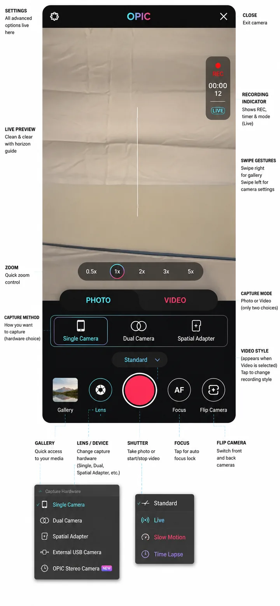

Open to remote senior iOS roles & selected contracts
iOS engineering for camera, video & real-time products.
I’m Bazil Hassan, a Senior iOS Engineer with 6+ years of production experience. I build native iOS systems with Swift, SwiftUI and UIKit, with deeper specialization in AVFoundation, spatial media, WebRTC and LiveKit.
6+ yearsProduction mobile engineering
Lead experienceTeam of 3 iOS engineers
40% lowerSpatial media processing latency
App StoreShipped across multiple product domains
01 / About
Engineering beyond the screen.
My work spans product UI, architecture, media pipelines, networking, performance and release delivery. The projects I’m most useful on are the ones where the iOS layer itself is part of the hard problem.
I currently lead iOS development on OPIC3D, a spatial camera and live-streaming product. My work includes custom capture flows, stereoscopic media, camera controls, transcoding, LiveKit streaming and production performance work.
Earlier, I shipped coaching, fitness, fintech, telemedicine, social, marketplace and productivity products. I’m comfortable joining an established codebase, tracing a production issue across layers, and delivering a fix without destabilizing the product around it.
I also lead and review implementation work, collaborate with product/design/QA across time zones, and take features from technical design through TestFlight and App Store release.
02 / Expertise
A native-first stack for production iOS.
Grouped around the systems I actually work with rather than a wall of keywords.
Camera, media & real-time
Architecture & quality
Data, backend & delivery
03 / Experience
Production ownership across the iOS lifecycle.
From custom media systems to shipping, production support and mentoring.
Lead iOS Developer / Senior iOS Developer
Leading a team of 3 iOS engineers on OPIC3D, a spatial camera and live-streaming product.
- Build standard and spatial photo/video capture, camera controls, stereoscopic processing and spatial metadata with AVFoundation.
- Ship LiveKit-powered live streaming and integrate backend services into real-time product workflows.
- Reduced media-processing latency by approximately 40% through capture-session and transcoding refactoring.
Senior iOS Developer / Senior iOS Engineer
Worked on Sibme’s established video-coaching platform and native iOS work for Mr. Rebounder.
- Delivered 10+ major Sibme features including file/folder flows, background audio and AI-assisted forms.
- Refactored AVFoundation media pipelines, reducing video buffering by 30% and improving playback reliability.
- Introduced Fastlane/TestFlight automation that reduced manual release effort by 50% and supported weekly releases.
Mobile App Developer / iOS Developer
Shipped production apps across fintech, wellness, productivity and marketplace products.
- Worked on Stonks Trading, Verideal, Tap for Joy and Weeks.
- Served as sole iOS developer for Weeks, building core UI/data flows with Firestore synchronization.
- Integrated Objective-C, OpenCV and AVFoundation for Verideal’s V-CODE scanner.
iOS Developer / Mobile App Developer
Delivered health-tech, social and legal-tech iOS products.
- Integrated Twilio video consultations and real-time doctor-patient communication for Hyphen.
- Built Socket.IO/WebSocket chat and live comments for Bublle.
- Delivered Realm-backed offline workflows and mentored 2 junior developers.
04 / Selected work
Projects that show the engineering, not just the UI.
The strongest work comes first: camera/media systems, established production products and cross-platform native integrations.
OPIC camera UI concept

Spatial camera & streaming2025 — Present
OPIC3D
Production spatial-camera platform spanning standard/spatial capture, stereoscopic processing, camera controls, transcoding and LiveKit-powered streaming.
Video coaching platform
iOS clientFiles · forms · audio
MediaPlayback · background audio
ReleaseTestFlight · Fastlane
Product workflowsCoaching · AI-assisted forms
Production supportDebugging · regression fixes
DeliveryWeekly release cadence
Coaching & education2022 — 2025
Sibme
An established video-coaching SaaS product where I delivered 10+ major features, media-pipeline work, production fixes and release automation.
Native iOS inside React Native
FitnessNative bridge
Mr. Rebounder
Built the native iOS module and React Native bridge supporting 3D exercise experiences, workout timers and communication between cross-platform and Swift layers.
Telemedicine · real-time communication
PatientOTP · chat · call
iOSAsync API coordination
TwilioVideo consultation
BackendNotifications · APIs
Health-tech2020
Hyphen
Telemedicine workflows combining Twilio-powered video consultations, doctor-patient chat, OTP authentication, notifications and asynchronous API coordination.
Lujo
Sports and events-related iOS product work.
App Store ↗Weeks
Habit tracker; sole iOS ownership of core UI/data flows and Firestore synchronization.
App Store ↗Tap for Joy
Wellness product with audio/video playback, premium content access and production feature work.
App Store ↗Verideal
Marketplace/backend integration plus V-CODE scanning work using Objective-C, OpenCV and AVFoundation.
App Store ↗Stonks Trading
Fintech product covering authentication, portfolio workflows, crypto/fiat flows and banking integration.
Bublle / Wakeel Online
Real-time social features with Socket.IO and backend-driven legal-tech forms, attachments and notifications.
05 / Case studies
How I approach difficult product work.
Focused on the actual constraint, implementation and outcome — without inventing metrics where none are available.
Case 01 · OPIC3D
Building a spatial camera and live-streaming system without destabilizing existing capture flows.
Lead iOS development across camera architecture, spatial media, LiveKit streaming and production performance.
≈40%reduction in media-processing latency through capture-session and transcoding refactoring.
Product
A spatial camera and live-streaming platform designed around photo/video capture, 3D media and real-time sharing.
Role
Lead iOS Developer / Senior iOS Developer, leading a team of 3 iOS engineers.
Challenge
Coordinate capture formats, preview state, stereoscopic processing and streaming while keeping mode changes reliable across devices.
Solution
Built and refactored AVFoundation capture flows, spatial left/right processing, camera controls, transcoding and LiveKit-backed live workflows with maintainable state boundaries.
Technology
Swift, SwiftUI, UIKit, AVFoundation, LiveKit, REST APIs, Firebase Cloud Functions, MVVM and Clean Architecture.
Impact
Lower processing latency, more reliable media workflows and a production foundation for standard, spatial and live camera experiences.
Case 02 · Sibme
Shipping meaningful features inside an established video-coaching product.
Feature ownership, media performance, production debugging and release automation in a mature iOS codebase.
30%less video buffering after AVFoundation media-pipeline refactoring.
Product
A video-coaching and collaboration platform used for reflection, feedback and coaching workflows.
Role
Senior iOS Engineer, one of 4 iOS engineers working in an established production application.
Challenge
Add new workflows while protecting existing product behavior and improving media reliability in a long-lived codebase.
Solution
Delivered 10+ major features, including file/folder flows, audio recording, background audio and AI-assisted forms; refactored media pipelines and handled production issues.
Technology
Swift, UIKit, AVFoundation, REST APIs, MVVM, Fastlane, TestFlight and App Store delivery.
Impact
Improved playback reliability and reduced manual release effort by 50%, helping move the product from bi-weekly to weekly releases.
Case 03 · Mr. Rebounder
Bridging React Native with native iOS for platform-specific fitness workflows.
A focused native integration where cross-platform UI needed deeper iOS capability.
Product
A fitness application with 3D exercise experiences and timer-based workout flows.
Role
Senior mobile/iOS engineer responsible for the native iOS module and React Native bridge.
Challenge
Expose native Swift behavior cleanly to the React Native layer without duplicating product logic.
Solution
Implemented the native module and bridge used for 3D exercise and timer flows, defining communication between cross-platform and native layers.
Technology
React Native, Swift and native iOS modules/bridging.
Impact
Enabled the cross-platform product to use iOS-specific implementation where native capability was required.
Case 04 · Hyphen
Real-time telemedicine flows across video, chat, authentication and backend coordination.
A production health-tech integration where reliability and asynchronous state mattered.
Product
A telemedicine application supporting remote doctor-patient communication.
Role
iOS developer delivering real-time communication and product workflows.
Challenge
Coordinate video consultations, chat, OTP flows, notifications and multiple asynchronous backend calls.
Solution
Integrated Twilio video, doctor-patient chat, OTP authentication and push flows, using GCD to coordinate asynchronous API work.
Technology
Swift, UIKit, Twilio, GCD, REST APIs and push notifications.
Impact
Delivered the real-time iOS workflows required for remote consultation and communication without claiming unverified usage metrics.
06 / Contact
Need senior iOS help on a difficult mobile product?
I’m open to remote Senior iOS Engineer roles and selected contract work, especially around camera, video, streaming, real-time communication and complex native iOS features.
Lahore, Pakistan · Available for international remote collaboration